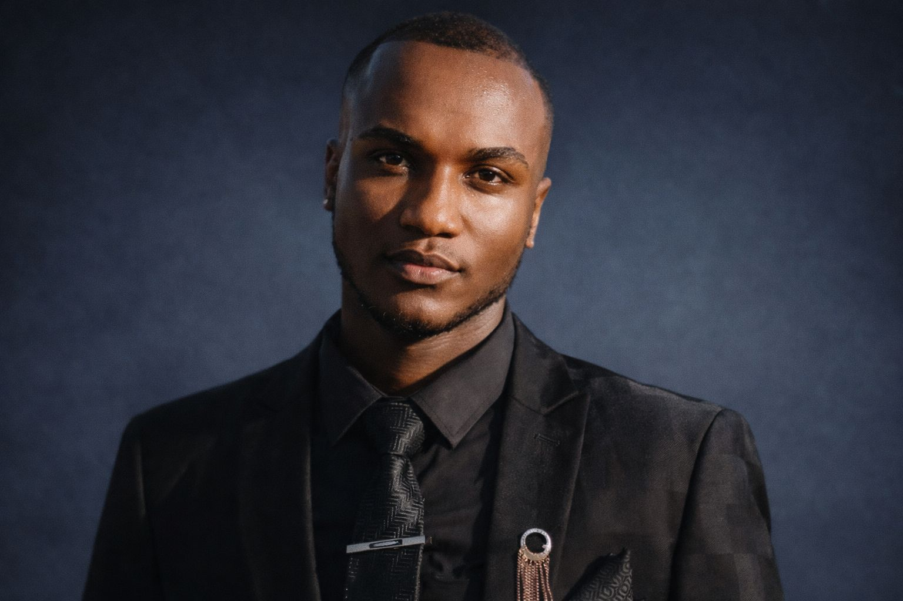

Business-aware engineering
I look beyond features to understand users, workflows, risks and the outcome the software must improve.
Pretoria, South Africa
I’m Lesedi Phalatse — a software developer, systems analyst and UI/UX designer combining business understanding, technical architecture and refined product design.

Professional profile
I approach software as a business tool: understand the work, simplify the process, design the experience, then engineer a dependable solution.
My portfolio spans ERP platforms, operational dashboards, responsive web experiences and role-based management systems across construction, mining, logistics, property and education.
I’m currently completing a Diploma in IT in Software Development while independently designing ambitious products that demonstrate requirements analysis, database thinking, interface design, application architecture and implementation.
I bring the curiosity of an early-career developer with the ownership mindset of a product builder — comfortable learning quickly, translating complex needs and carrying ideas from concept to usable software.
I look beyond features to understand users, workflows, risks and the outcome the software must improve.
From requirements and wireframes to APIs, databases, responsive interfaces, testing and documentation.
Clear information hierarchy, refined visual systems and interfaces designed for repeated daily use.
Selected work
Each project reflects a different industry, but the same approach: understand the process, structure the information and make demanding work easier to manage.
Capabilities
01
02
03
04
05
Now developing
Cloud deployment, DevOps workflows, containerisation, automated testing, AI integration and deeper software architecture patterns.
“The best software is not the one with the most features. It is the one that makes important work simpler, faster and more dependable.”
— My engineering philosophyHow I work
Clarify users, business needs, constraints and the decisions the system must support.
Map workflows, data, permissions, modules and the architecture behind the experience.
Create a consistent interface system that makes complex information clear and usable.
Implement features across the frontend, backend and database with maintainability in mind.
Test interactions, resolve gaps, improve performance and document the final solution.
Experience & development
Sedi.P Industrial Software Services
Developing business systems and web experiences while shaping product strategy, interface design, technical requirements and client-facing proposals.
Enterprise application portfolio
Designed cross-industry ERP concepts featuring dashboards, analytics, document management, reporting, workflows, permissions and operational modules.
Software Development
Developing practical knowledge across programming, databases, operating systems, information security, systems analysis and application development.
Mobile Application & Web Development
Built a foundation in web development, mobile application concepts, interface design and modern digital product creation.
Where I add value
Strong product ownership, broad technical exposure, business awareness and a portfolio that demonstrates initiative beyond coursework.
Someone who can understand requirements, contribute to interfaces, reason about systems and collaborate across disciplines.
Clear communication, structured discovery and tailored digital solutions designed around the way an organisation actually works.
Start a conversation
I’m open to graduate software roles, junior developer opportunities, product collaborations, internships and selected digital projects.
lesediphaltse13@gmail.com ↗Pretoria, Gauteng
South Africa
Employment
Internships
Partnerships